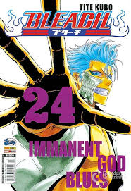

⚔️ Bleach
A fase moderna do shonen com estilo e poder
Bleach representa uma fase mais moderna e estilosa dos animes shonen. Criado por Tite Kubo e publicado na Weekly Shonen Jump a partir de 2001, o mangá acompanha Ichigo Kurosaki, um adolescente que adquire poderes de Shinigami — um guardião espiritual.
Com uma direção de arte diferenciada, batalhas baseadas em poderes espirituais e uma galeria de personagens memorável, Bleach trouxe uma nova identidade para o gênero shonen.
Em 2022, o anime retornou com o arco Thousand-Year Blood War, considerado por muitos fãs como o melhor do anime, encerrando a saga com animações de altíssima qualidade pelo estúdio Pierrot.

Principais Arcos
- Arco do Agente da Morte Substituto
- Ichigo recebe os poderes de Rukia
- Apresentação dos Hollows e da Soul Society
- Arco da Soul Society
- Ichigo invade a cidade dos mortos para salvar Rukia
- Introdução dos 13 Esquadrões Gotei
- Revelação da traição de Aizen
- Arco de Hueco Mundo
- Ichigo luta contra os Espadas de Aizen
- Transformações de Hollow do protagonista
- Arco Thousand-Year Blood War (Final)
- Quincy do Rei das Sombras atacam a Soul Society
- Animação de altíssimo nível pelo Studio Pierrot
- Lançado em 2022 após 10 anos sem anime novo
Diferenciais do Bleach
Design Único
Tite Kubo é reconhecido pelo estilo visual marcante de seus personagens.
Trilha Sonora
Uma das melhores OSTs do anime, com músicas que se tornaram clássicos.
Poderes Espirituais
Sistema de combate baseado em Reiryoku (energia espiritual) e Bankai.